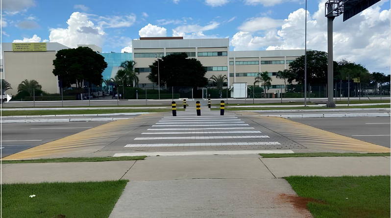
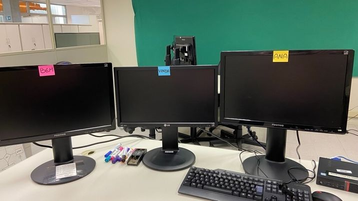
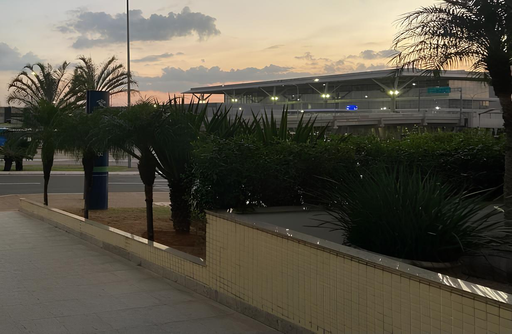

<div class="container">
  <div class="historia_estagio">
    <h2>Sobre Meu Estágio</h2>
    <div class="slider">

      <div class="slides">
        <input type="radio" name="radio-btn" id="radio1">
        <input type="radio" name="radio-btn" id="radio2">
        <input type="radio" name="radio-btn" id="radio3">
        <input type="radio" name="radio-btn" id="radio4">

        <div class="slide first">
          
        </div>
        <div class="slide">
          
        </div>
        <div class="slide">
          
        </div>
        <div class="slide">
          
        </div>

        <div class="navigation-auto">
          <div class="auto-btn1"></div>
          <div class="auto-btn2"></div>
          <div class="auto-btn3"></div>
          <div class="auto-btn4"></div>
        </div>

      </div>

      <div class="manual-navigation">
        <label for="radio1" class="manual-btn"></label>
        <label for="radio2" class="manual-btn"></label>
        <label for="radio3" class="manual-btn"></label>
        <label for="radio4" class="manual-btn"></label>
      </div>

    </div>
    <br><br>


    <p>
      Sou estagiária na Receita Federal do Brasil (RFB), no Aeroporto Internacional de Viracopos, em Campinas.
      Estou no meu primeiro semestre de estágio e atuo na área de Tecnologia da Informação (TI).
      Mais especificamente, trabalho com desenvolvimento de sistemas, análise de dados, desenvolvimento
      de páginas web, entre outras atividades relacionadas.
    </p>
    <p>
      Os altos e baixos são inevitáveis quando se trabalha para um órgão tão importante como a Receita Federal.
      No entanto, o que realmente importa é o conhecimento adquirido. Quando entrei, confesso que estava
      apreensiva. Filmes e programas de TV muitas vezes retratam a Receita como um ambiente rígido e impessoal.
      Quem assiste “Aeroporto - Área Restrita” pode entender o que estou dizendo e super recomendo assistir essa série .
    </p>
    <p>
      Mas, para minha surpresa, encontrei uma equipe acolhedora e colaborativa.
      Os colegas de trabalho me receberam de braços abertos e estiveram dispostos a compartilhar seus conhecimentos.
      O medo inicial se dissipou à medida que me envolvi em projetos desafiadores. esta experiência tem sido
      fundamental para meu crescimento profissional, permitindo-me desenvolver habilidades técnicas e aprender
      sobre o funcionamento de uma das principais instituições do país. Cada tarefa realizada me ensinou algo novo e me
      aproximou do meu objetivo de me
      tornar uma profissional competente.
    </p>
    <p>
      Se você também está começando sua carreira, lembre-se de que o conhecimento é o maior tesouro que podemos
      adquirir. E, assim como eu, você pode superar qualquer medo inicial e se destacar em sua área de atuação.
    </p>
  </div>
</div>